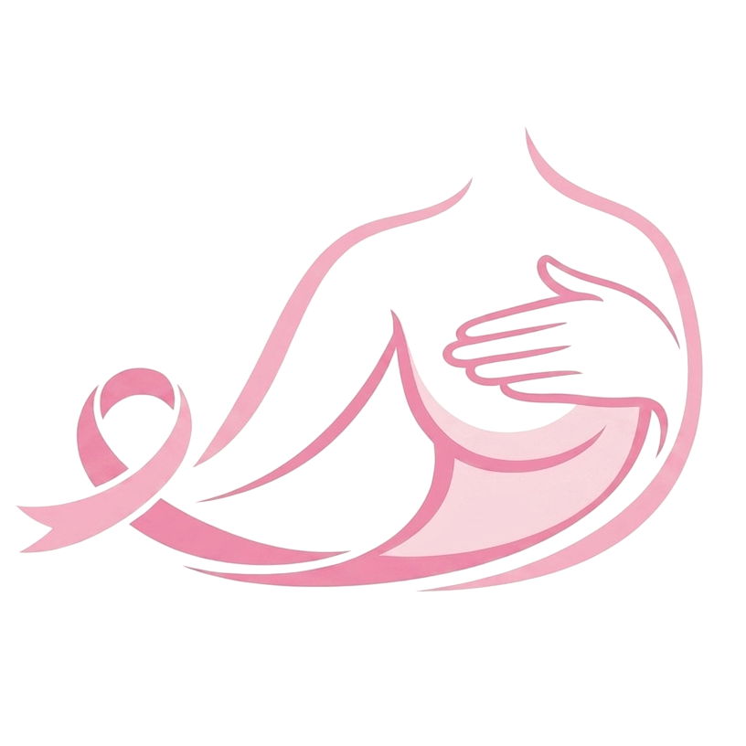
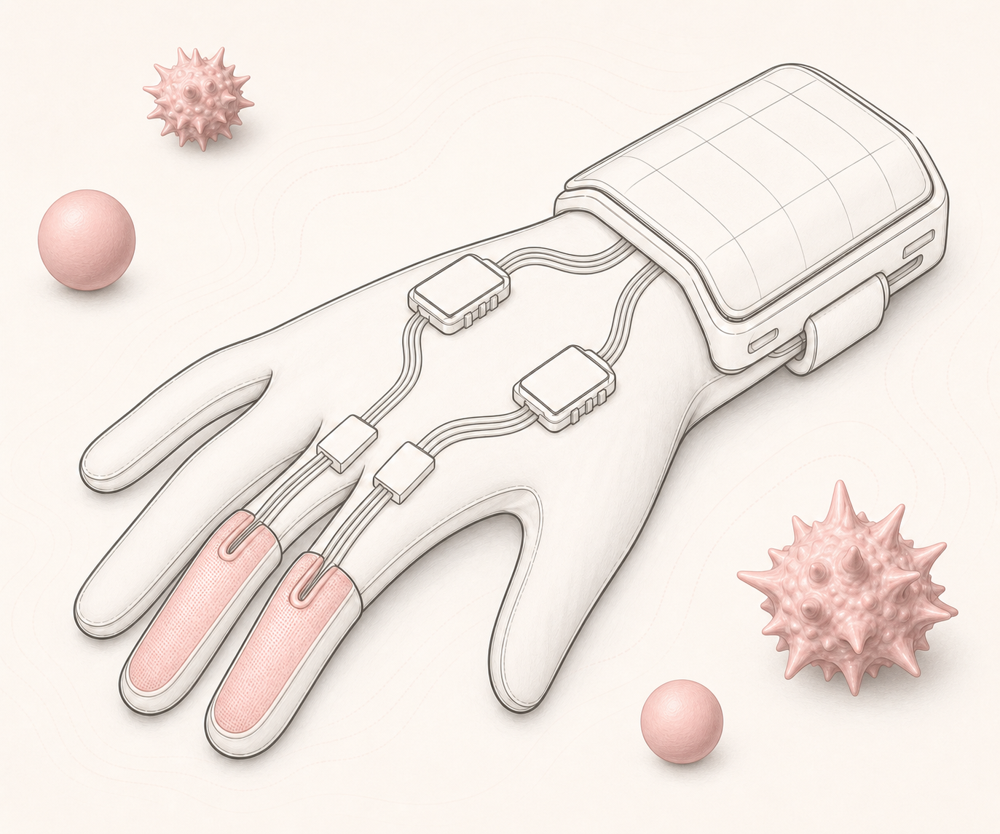
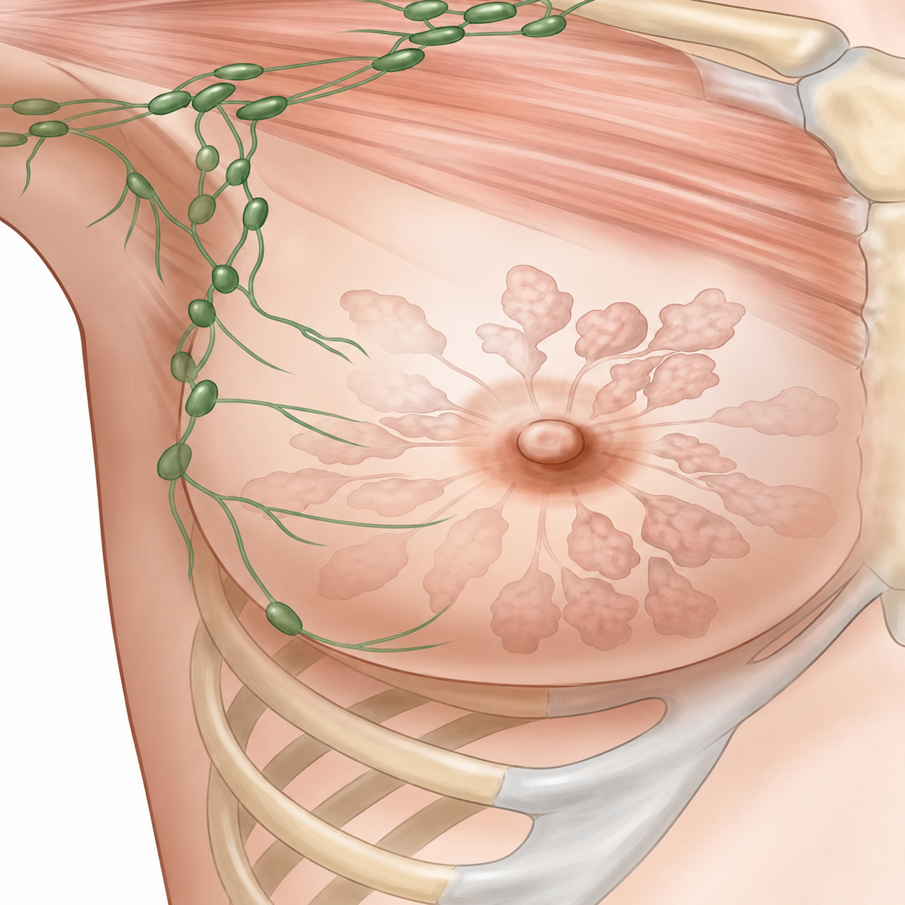

VAN—BREASTTraining system

Iniciar sesión
Demo frontend: las credenciales son simuladas.
Guante conectado (simulado)
VAN—BREAST registra fuerza para entrenamiento; no es un sistema de diagnóstico.


Demo frontend: las credenciales son simuladas.
VAN—BREAST registra fuerza para entrenamiento; no es un sistema de diagnóstico.
Una vista rápida del entrenamiento y los registros.
15 prácticas completadas esta semana.
Paciente: Valeria Mendoza

Presión actual detectada
● Dentro del rangoPresión actual detectada
● Dentro del rangoSesiones realizadas por todo el equipo.
| Fecha | Paciente | Instructor/a | Duración | Estado |
|---|
Consulta los pacientes registrados por cada instructor.
Perfil, adquisición de datos y estado del guante.
La foto se guarda en este navegador para la demo.